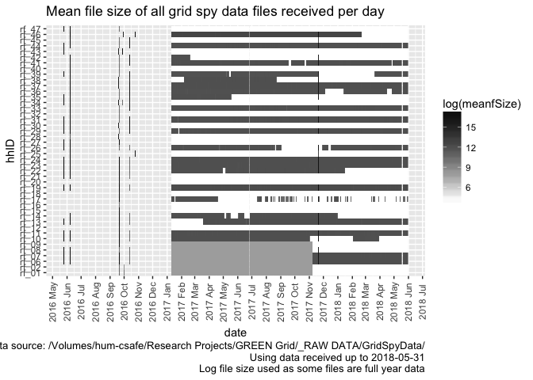

Processing, cleaning and saving NZ GREEN Grid project 1 minute electricity power data
Ben Anderson (b.anderson@soton.ac.uk, @dataknut)
Last run at: 2018-05-30 16:26:16
1 Status
Test run using reduced data from ~/Data/NZGreenGrid/gridspy/1min_orig/
2 Citation
If you wish to use any of the material from this report please cite as:
- Anderson, B. (2018) Processing, cleaning and saving NZ GREEN Grid project 1 minute electricity power data, University of Otago: Dunedin, NZ.
3 Introduction
Report circulation:
- Restricted to: NZ GREEN Grid project partners and contractors.
3.1 Purpose
This report is intended to:
- load and clean the project electricity power data (Grid Spy)
- save the cleaned data out as a single file per household
- produce summary data quality statistics
The resulting cleaned data has no identifying information such as names, addresses, email addresses, telephone numbers and is therefore safe to share across all partners.
The data contains a unique household id which can be used to link it to the NZ GREEN Grid time use diaries and dwelling/appliance surveys. With some additional non-disclosure checks it should also be safe to archive all of these linkable datasets for re-use via the UK reshare service.
3.2 Requirements:
- grid spy 1 minute data downloads
3.4 Support
This work was supported by:
- The University of Otago
- The New Zealand Ministry of Business, Innovation and Employment (MBIE)
- SPATIALEC - a Marie Skłodowska-Curie Global Fellowship based at the University of Otago’s Centre for Sustainability (2017-2019) & the University of Southampton’s Sustainable Energy Research Group (2019-202).
This work is (c) 2018 the University of Southampton.
We do not ‘support’ the code but if you have a problem check the issues on our repo and if it doesn’t already exist, open one. We might be able to fix it :-)
4 Obtain listing of files
In this section we generate a listing of all 1 minute data files that we have received. If we are running over the complete dataset then we will be using data from:
- /hum-csafe/Research Projects/GREEN Grid/_RAW DATA/GridSpyData/
In this run we are using data from:
- ~/Data/NZGreenGrid/gridspy/1min_orig/
If these do not match then this may be a test run.
## Loading required package: data.table## Loading required package: lubridate##
## Attaching package: 'lubridate'## The following objects are masked from 'package:data.table':
##
## hour, isoweek, mday, minute, month, quarter, second, wday,
## week, yday, year## The following object is masked from 'package:base':
##
## date## Loading required package: readr## Loading required package: dplyr##
## Attaching package: 'dplyr'## The following objects are masked from 'package:lubridate':
##
## intersect, setdiff, union## The following objects are masked from 'package:data.table':
##
## between, first, last## The following objects are masked from 'package:stats':
##
## filter, lag## The following objects are masked from 'package:base':
##
## intersect, setdiff, setequal, union## Loading required package: progress## [1] "Looking for 1 minute data using pattern = *at1.csv$ in ~/Data/NZGreenGrid/gridspy/1min_orig/ - could take a while..."
## [1] "Looking for data using pattern = *at1.csv$ in ~/Data/NZGreenGrid/gridspy/1min_orig/ - could take a while..."
## [1] "Found 2,477 files"
## [1] "Processing file list and getting file meta-data. Please be patient)"
## [1] "All files checked"
## [1] "Checking ambiguous date formats in ~/Data/NZGreenGrid/gridspy/1min_orig/rf_46/12Oct2016-20Nov2017at1.csv"
## [1] "Saving 1 minute data files interim metadata to ~/Data/NZGreenGrid/gridspy/consolidated/1min/fListCompleteDT_interim.csv"
## [1] "Done"## [1] "Overall we have 2477 files from 5 households."Overall we have 2,477 files from 5 households. Of the 2,477, 2,055 (82.96%) were not loaded/checked as their file sizes indicated that they contained no data.
4.1 Date format checks
We now need to check how many of the loaded files have an ambiguous or default date - these could introduce errors.
| dateColName | dateFormat | nFiles | minDate | maxDate |
|---|---|---|---|---|
| date NZ | dmy - definite | 1 | 27/03/2015 | 27/03/2015 |
| date NZ | mdy - definite | 1 | 5/26/2016 | 5/26/2016 |
| date NZ | ymd - default (but day/month value <= 12) | 2 | 2014-01-06 | 2014-07-09 |
| date NZ | ymd - definite | 6 | 2014-05-24 | 2016-05-26 |
| date UTC | ambiguous | 1 | 11-10-16 | 11-10-16 |
| date UTC | ymd - default (but day/month value <= 12) | 162 | 2016-10-11 | 2018-02-12 |
| date UTC | ymd - definite | 249 | 2015-05-24 | 2018-02-19 |
| unknown - do not load (fsize = 2751) | NA | 302 | NA | NA |
| unknown - do not load (fsize = 43) | NA | 1753 | NA | NA |
Results to note:
- There are 1 ambiguous files
- The non-loaded files only have 2 distinct file sizes, confirming that they are unlikely to contain useful data.
We now inspect the ambiguous and (some of) the default files.
To help with data cleaning the following table lists files that have ambiguous dates.
# list ambigious files
aList <- fListCompleteDT[dateFormat == "ambiguous",
.(file, dateColName, dateExample, dateFormat)]
cap <- paste0("All ", nrow(aList),
" files with an ambiguous dateFormat")
knitr::kable(caption = cap, aList)| file | dateColName | dateExample | dateFormat |
|---|---|---|---|
| rf_46/12Oct2016-20Nov2017at1.csv | date UTC | 11-10-16 | ambiguous |
Check against file names to see what is reasonable and then fix them.
# Setting to dmy seems OK
fListCompleteDT <- fListCompleteDT[dateFormat == "ambiguous",
dateFormat := "dmy - inferred"]
paste0("Fixed ", nrow(aList), " files with an ambiguous dateFormat")## [1] "Fixed 1 files with an ambiguous dateFormat"The following table lists up to 10 of the ‘date NZ’ files which are set by default - do they look OK to assume the default dateFormat? Compare the file names with the dateExample…
# list default files with NZ time
aList <- fListCompleteDT[dateColName == "date NZ" & dateFormat %like% "default",
.(file, fSize, dateColName, dateExample, dateFormat)]
cap <- paste0("First 10 (max) of ", nrow(aList),
" files with dateColName = 'date NZ' and default dateFormat")
knitr::kable(caption = cap, head(aList))| file | fSize | dateColName | dateExample | dateFormat |
|---|---|---|---|---|
| rf_01/1Jan2014-24May2014at1.csv | 6255737 | date NZ | 2014-01-06 | ymd - default (but day/month value <= 12) |
| rf_12/24May2014-24May2015at1.csv | 21191785 | date NZ | 2014-07-09 | ymd - default (but day/month value <= 12) |
The following table lists up to 10 of the ‘date UTC’ files which are set by default - do they look OK to assume the default dateFormat? Compare the file names with the dateExample…
# list default files with UTC time
aList <- fListCompleteDT[dateColName == "date UTC" & dateFormat %like% "default",
.(file, fSize, dateColName, dateExample, dateFormat)]
cap <- paste0("First 10 (max) of ", nrow(aList),
" files with dateColName = 'date UTC' and default dateFormat")
knitr::kable(caption = cap, head(aList, 10))| file | fSize | dateColName | dateExample | dateFormat |
|---|---|---|---|---|
| rf_45/12Oct2016-20Nov2017at1.csv | 266415 | date UTC | 2016-10-11 | ymd - default (but day/month value <= 12) |
| rf_46/10Apr2017-11Apr2017at1.csv | 292721 | date UTC | 2017-04-09 | ymd - default (but day/month value <= 12) |
| rf_46/10Aug2017-11Aug2017at1.csv | 292888 | date UTC | 2017-08-09 | ymd - default (but day/month value <= 12) |
| rf_46/10Dec2017-11Dec2017at1.csv | 292823 | date UTC | 2017-12-09 | ymd - default (but day/month value <= 12) |
| rf_46/10Feb2017-11Feb2017at1.csv | 286736 | date UTC | 2017-02-09 | ymd - default (but day/month value <= 12) |
| rf_46/10Feb2018-11Feb2018at1.csv | 299084 | date UTC | 2018-02-09 | ymd - default (but day/month value <= 12) |
| rf_46/10Jan2017-11Jan2017at1.csv | 297659 | date UTC | 2017-01-09 | ymd - default (but day/month value <= 12) |
| rf_46/10Jan2018-11Jan2018at1.csv | 294418 | date UTC | 2018-01-09 | ymd - default (but day/month value <= 12) |
| rf_46/10Jul2017-11Jul2017at1.csv | 291082 | date UTC | 2017-07-09 | ymd - default (but day/month value <= 12) |
| rf_46/10Jun2017-11Jun2017at1.csv | 295979 | date UTC | 2017-06-09 | ymd - default (but day/month value <= 12) |
Check final date formats:
| dateColName | dateFormat | nFiles | minDate | maxDate |
|---|---|---|---|---|
| date NZ | dmy - definite | 1 | 27/03/2015 | 27/03/2015 |
| date NZ | mdy - definite | 1 | 5/26/2016 | 5/26/2016 |
| date NZ | ymd - default (but day/month value <= 12) | 2 | 2014-01-06 | 2014-07-09 |
| date NZ | ymd - definite | 6 | 2014-05-24 | 2016-05-26 |
| date UTC | dmy - inferred | 1 | 11-10-16 | 11-10-16 |
| date UTC | ymd - default (but day/month value <= 12) | 162 | 2016-10-11 | 2018-02-12 |
| date UTC | ymd - definite | 249 | 2015-05-24 | 2018-02-19 |
| unknown - do not load (fsize = 2751) | NA | 302 | NA | NA |
| unknown - do not load (fsize = 43) | NA | 1753 | NA | NA |
4.2 Data file quality checks
The following chart shows the distribution of these files over time using their sizes. Note that white indicates the presence of small files which may not contain observations.

## Saving 7 x 5 in imageThe following chart shows the same chart but only for files which we think contain data.

## Saving 7 x 5 in image5 Load data files
5.1 Grid Spy metadata
In this section we load metadata from /Users/ben/Syncplicity Folders/Green Grid Project Management Folder/Gridspy/Master list of Gridspy units.xlsx to link to the power data.
## sample hhID Adults Teenagers Children removed
## 1: Unison rf_28 2 <NA> 3(12,8,4) <NA>
## 2: Unison rf_29 2 <NA> 1 (7 months old) live
## 3: Unison rf_30 2 0 0 <NA>
## 4: Unison rf_31 2 (Plus cousin) <NA> <NA> live
## 5: Unison rf_32 2 <NA> 2 (7 and 4years old) <NA>
## 6: Unison rf_33 2 1(14yold) 1 (6yold) live## sample hhID Adults Teenagers Children removed
## 1: Powerco rf_12 1 <NA> <NA> 3/6/1015
## 2: Powerco <NA> 1 <NA> <NA> <NA>
## 3: Powerco rf_25 1 <NA> <NA> <NA>
## 4: Powerco <NA> NA <NA> <NA> <NA>
## 5: Powerco <NA> 1 <NA> 1(5mo) <NA>
## 6: Powerco <NA> NA <NA> <NA> <NA>| sample | hhID | Adults | Teenagers | Children | removed |
|---|---|---|---|---|---|
| Powerco | rf_06 | 2 | NA | NA | NA |
| Powerco | rf_07 | 2 | NA | 2 | NA |
| Powerco | rf_08 | 2 | NA | NA | NA |
| Powerco | rf_09 | 2 | NA | 1 | 42171 |
| Powerco | rf_10 | 2 | NA | 1(3yo) | NA |
| Powerco | rf_11 | NA | NA | NA | NA |
| Powerco | rf_12 | 1 | NA | NA | 3/6/1015 |
| Powerco | rf_13 | 2 | 1(16yo) | 1(11) | NA |
| Powerco | rf_14 | 1 | NA | 1 (11 yo) | NA |
| Powerco | rf_15 | NA | NA | NA | 42462 |
| Powerco | rf_15_old | 1 | NA | NA | 42019 |
| Powerco | rf_16 | 2 | NA | NA | 42089 |
| Powerco | rf_17 sn_662 | NA | NA | NA | NA |
| Powerco | rf_17_oldNo reused | 2 | 1(13yo) | 1(11yo) | 42457 |
| Powerco | rf_18 | 2 | NA | 1(1yo) | 42532 |
| Powerco | rf_19 | 1 | NA | NA | NA |
| Powerco | rf_20 | 2 | NA | 2 | 42166 |
| Powerco | rf_21 | 2 | NA | NA | 42821 |
| Powerco | rf_22 | 2 | NA | NA | NA |
| Powerco | rf_23 | 1 | NA | NA | NA |
| Powerco | rf_24 | 2 | NA | 2 | NA |
| Powerco | rf_25 | 1 | NA | NA | NA |
| Powerco | rf_26 | 2 | NA | NA | NA |
| Powerco | rf_27 | 2 | 1 | 1 | NA |
| Unison | rf_28 | 2 | NA | 3(12,8,4) | NA |
| Unison | rf_29 | 2 | NA | 1 (7 months old) | live |
| Unison | rf_30 | 2 | 0 | 0 | NA |
| Unison | rf_31 | 2 (Plus cousin) | NA | NA | live |
| Unison | rf_32 | 2 | NA | 2 (7 and 4years old) | NA |
| Unison | rf_33 | 2 | 1(14yold) | 1 (6yold) | live |
| Unison | rf_34 | 3 | NA | NA | NA |
| Unison | rf_35 | 2 | NA | NA | 42322 |
| Unison | rf_36 | 1 | 2 (14 and 12) | NA | live |
| Unison | rf_37 | 2 | NA | NA | live |
| Unison | rf_38 | NA | NA | NA | NA |
| Unison | rf_38 | 2 | NA | 2 (<12) | NA |
| Unison | rf_39 | 2 | 1 (16 YO) | NA | live |
| Unison | rf_40 | 2 | NA | NA | 42330 |
| Unison | rf_41 | 2 | NA | 2 (11 and 8) | live |
| Unison | rf_42 | 2 | NA | 3 (<12 yold, 1 10 YO) | NA |
| Unison | rf_43 | 2 | NA | NA | 42296 |
| Unison | rf_44 | 2 | NA | 2 (10 and 7) | NA |
| Unison | rf_45 | 2 | NA | 3 (<12 years old) | NA |
| Unison | rf_46 | 2 | NA | 1 (4yold-50%) | live |
| Unison | rf_47 | 3 | 2 | NA | NA |
5.2 Grid Spy data
In this section we load the data files that have a file size > 3000 bytes. Things to note:
- We assume that any files smaller than this value have no observations. This is based on:
- Manual inspection of several small files
- The identical (small) file sizes involved
- But we should probably test the first few lines to double check…
- We have to deal with quite a lot of duplication some of which has caused the different date formats. See our repo issues list.
The following table shows the number of files per household that we will load.
# check files to load
t <- fListCompleteDT[dateColName %like% "do not load", .(nFiles = .N,
meanSize = mean(fSize),
minFileDate = min(fMDate),
maxFileDate = max(fMDate)), keyby = .(hhID)]
knitr::kable(caption = "Summary of household files to load", t)| hhID | nFiles | meanSize | minFileDate | maxFileDate |
|---|---|---|---|---|
| rf_01 | 475 | 1764.718 | 2017-01-11 | 2018-04-29 |
| rf_12 | 504 | 43.000 | 2017-01-11 | 2018-05-28 |
| rf_32 | 504 | 43.000 | 2017-01-11 | 2018-05-28 |
| rf_45 | 503 | 43.000 | 2017-01-11 | 2018-05-28 |
| rf_46 | 69 | 43.000 | 2018-02-22 | 2018-05-01 |
Now load and save the data and give feedback where appropriate.
# if kniting to pdf do not include outputs as it breaks the pdf render (why?)
# load and save data using external R script
source("../scripts/process1minGridSpyData.R")## Loading required package: reshape2##
## Attaching package: 'reshape2'## The following objects are masked from 'package:data.table':
##
## dcast, melt## [1] "Loading: rf_01"
## [1] "Removed 14664 (0.29% of observations) where powerW = NA"
## [1] "Saving ~/Data/NZGreenGrid/gridspy/consolidated/1min/data/rf_01_all_1min_data.csv..."
## [1] "Saved ~/Data/NZGreenGrid/gridspy/consolidated/1min/data/rf_01_all_1min_data.csv, gzipping..."
## [1] "Gzipped ~/Data/NZGreenGrid/gridspy/consolidated/1min/data/rf_01_all_1min_data.csv"
## [1] "Loading: rf_12"
## [1] "Removed 70854 (2.88% of observations) where powerW = NA"
## [1] "Saving ~/Data/NZGreenGrid/gridspy/consolidated/1min/data/rf_12_all_1min_data.csv..."
## [1] "Saved ~/Data/NZGreenGrid/gridspy/consolidated/1min/data/rf_12_all_1min_data.csv, gzipping..."
## [1] "Gzipped ~/Data/NZGreenGrid/gridspy/consolidated/1min/data/rf_12_all_1min_data.csv"
## [1] "Loading: rf_32"
## [1] "Removed 7530 (0.23% of observations) where powerW = NA"
## [1] "Saving ~/Data/NZGreenGrid/gridspy/consolidated/1min/data/rf_32_all_1min_data.csv..."
## [1] "Saved ~/Data/NZGreenGrid/gridspy/consolidated/1min/data/rf_32_all_1min_data.csv, gzipping..."
## [1] "Gzipped ~/Data/NZGreenGrid/gridspy/consolidated/1min/data/rf_32_all_1min_data.csv"
## [1] "Loading: rf_45"
## [1] "Removed 10146 (0.21% of observations) where powerW = NA"
## [1] "Saving ~/Data/NZGreenGrid/gridspy/consolidated/1min/data/rf_45_all_1min_data.csv..."
## [1] "Saved ~/Data/NZGreenGrid/gridspy/consolidated/1min/data/rf_45_all_1min_data.csv, gzipping..."
## [1] "Gzipped ~/Data/NZGreenGrid/gridspy/consolidated/1min/data/rf_45_all_1min_data.csv"
## [1] "Loading: rf_46"
## [1] "Removed 294154 (1.52% of observations) where powerW = NA"
## [1] "Saving ~/Data/NZGreenGrid/gridspy/consolidated/1min/data/rf_46_all_1min_data.csv..."
## [1] "Saved ~/Data/NZGreenGrid/gridspy/consolidated/1min/data/rf_46_all_1min_data.csv, gzipping..."
## [1] "Gzipped ~/Data/NZGreenGrid/gridspy/consolidated/1min/data/rf_46_all_1min_data.csv"
## [1] "Saving daily observations stats by hhid to ~/Data/NZGreenGrid/gridspy/consolidated/1min/hhDailyObservationsStats.csv"
## [1] "Done"
## [1] "Saving 1 minute data files final metadata to ~/Data/NZGreenGrid/gridspy/consolidated/1min/fListCompleteDT_final.csv"
## [1] "Done"# add metadata
setkey(fListCompleteDT, hhID)
setkey(metaDT, hhID)
fListCompleteDT <- metaDT[fListCompleteDT]
print(paste0("# -> Loaded and saved ", uniqueN(hhStatDT$hhID), " households (from ", nrow(filesToLoadDT), " files)" ))## [1] "# -> Loaded and saved 5 households (from 422 files)"6 Data quality analysis
Now produce some data quality plots & tables.
6.1 Circuit label checks
The following table shows the number of data files with different circuit labels by household. In theory there should only be one unique list per household and it should be present in every data file. If this is not the case then this implies that:
- some of the circuit labels for these households may have been changed during the data collection process;
- some of the circuit labels may have character conversion errors which have changed the labels during the data collection process;
- at least one file from one household has been saved to a folder containing data from a different household (unfortunately the raw data files do not contain household IDs in the data or the file names which would enable checking/preventative filtering). This will be visible in the table if two households appear to share exactly the same list of circuit labels.
Some or all of these may be true at any given time!
NB: This table is only legible in the html version of this report because latex does a very bad job of wrapping table cell text. A version is saved in ~/Data/NZGreenGrid/gridspy/consolidated/1min/circuitLabelCheck.csv for viewing in e.g. xl.
| rf_01 | rf_12 | rf_32 | rf_45 | rf_46 | |
|---|---|---|---|---|---|
| Heat Pump$4160, Hot Water - Controlled$4158, Incomer - Uncontrolled$4157, Kitchen Appliances$4161, Laundry & Garage Fridge$4162, Lighting$4159 | 0 | 0 | 0 | 4 | 0 |
| Heat Pump$4196, Hot Water - Controlled$4198, Incomer - All$4193, Kitchen Appliances$4195, Laundry$4194, Lighting$4197 | 0 | 0 | 2 | 0 | 0 |
| Heat Pumps (2x) & Power$4232, Heat Pumps (2x) & Power$4399, Hot Water - Controlled$4231, Hot Water - Controlled$4400, Incomer - Uncontrolled$4230, Incomer - Uncontrolled$4401, Incomer Voltage$4405, Kitchen & Bedrooms$4229, Kitchen & Bedrooms$4402, Laundry & Bedrooms$4228, Laundry & Bedrooms$4403, Lighting$4233, Lighting$4404 | 0 | 0 | 0 | 0 | 411 |
| Heating$1633, Hot water$1636, Kitchen power$1632, Lights$1635, Mains$1634, Range$1637 | 3 | 0 | 0 | 0 | 0 |
| Incomer 1 - Hot Water - Cont$2626, Incomer 2 - Uncontrolled$2625, Incomer 3 - Uncontrolled$2627, Kitchen Appliances & Lounge$2630, Laundry, Fridge & Microwave$2628, Oven$2629 | 0 | 2 | 0 | 0 | 0 |
Errors are easy to spot in the following plot where a hhID spans 2 or more circuit labels.

## Saving 7 x 8 in imageThe following table provides more detail to aid error checking. Check for:
- 2+ adjacent rows which have exactly the same circuit labels but different hh_ids. This implies some data from one household has been saved in the wrong folder;
- 2+ adjacent rows which have different circuit labels but identical hh_ids. This could imply the same thing but is more likely to be errors/changes to the circuit labelling.
If the above plot and this table flag a lot of errors then some re-naming of the circuit labels (column names) may be necessary.
NB: As before, the table is only legible in the html version of this report because latex does a very bad job of wrapping table cell text. A version is saved in ~/Data/NZGreenGrid/gridspy/consolidated/1min/circuitLabelMetaDataCheckTable.csv for viewing in e.g. xl.
| circuitLabels | hhID | sample | nFiles | minObsDate | maxObsDate | minFileDate | maxFileDate | nObs |
|---|---|---|---|---|---|---|---|---|
| Heat Pump$4160, Hot Water - Controlled$4158, Incomer - Uncontrolled$4157, Kitchen Appliances$4161, Laundry & Garage Fridge$4162, Lighting$4159 | rf_45 | Unison | 4 | 2015-03-24 | 2016-10-15 | 2016-06-08 | 2017-11-21 | 821472 |
| Heat Pump$4196, Hot Water - Controlled$4198, Incomer - All$4193, Kitchen Appliances$4195, Laundry$4194, Lighting$4197 | rf_32 | Unison | 2 | 2015-03-25 | 2016-04-05 | 2016-06-08 | 2016-09-20 | 542484 |
| Heat Pumps (2x) & Power$4232, Heat Pumps (2x) & Power$4399, Hot Water - Controlled$4231, Hot Water - Controlled$4400, Incomer - Uncontrolled$4230, Incomer - Uncontrolled$4401, Incomer Voltage$4405, Kitchen & Bedrooms$4229, Kitchen & Bedrooms$4402, Laundry & Bedrooms$4228, Laundry & Bedrooms$4403, Lighting$4233, Lighting$4404 | rf_46 | Unison | 411 | 2015-03-26 | 2018-02-19 | 2016-06-08 | 2018-02-21 | 2529107 |
| Heating$1633, Hot water$1636, Kitchen power$1632, Lights$1635, Mains$1634, Range$1637 | rf_01 | NA | 3 | 2014-01-05 | 2015-10-20 | 2016-09-20 | 2016-09-30 | 855836 |
| Incomer 1 - Hot Water - Cont$2626, Incomer 2 - Uncontrolled$2625, Incomer 3 - Uncontrolled$2627, Kitchen Appliances & Lounge$2630, Laundry, Fridge & Microwave$2628, Oven$2629 | rf_12 | Powerco | 2 | 2014-07-08 | 2015-06-02 | 2016-09-21 | 2016-09-21 | 410063 |
Things to note:
- rf_25 has an aditional unexpected “Incomer 1 - Uncontrolled$2757” circuit in some files but it’s value is always NA so we have not ‘corrected’ this.
6.2 Observations
The following plots show the number of observations per day per household. In theory we should not see:
- dates before 2014 or in to the future. These may indicate:
- date conversion errors;
- more than 1440 observations per day. These may indicate:
- duplicate time stamps - i.e. they have the same time stamps but different power (W) values or different circuit labels;
- observations from files that are in the ‘wrong’ rf_XX folder and so are included in the ‘wrong’ household as ‘duplicate’ time stamps.
If present both of the latter may have been implied by the table above and would have evaded the de-duplication filter which simply checks each complete row against all others within it’s consolidated household dataset (a within household absolute duplicate check).
## Warning: Removed 41 rows containing missing values (geom_tile).
## Saving 7 x 5 in image## Warning: Removed 41 rows containing missing values (geom_tile).## Warning: Removed 41 rows containing missing values (geom_point).
## Saving 7 x 5 in image## Warning: Removed 41 rows containing missing values (geom_point).The following table shows the min/max observations per day and min/max dates for each household. As above, we should not see:
- dates before 2014 or in to the future (indicates date conversion errors)
- more than 1440 observations per day (indicates potentially duplicate observations)
- non-integer counts of circuits as it suggests some column errors
We should also not see NA in any row (indicates date conversion errors).
If we do see any of these then we still have data cleaning work to do!
| hhID | sample | minObs | maxObs | meanNDataColumns | minDate | maxDate |
|---|---|---|---|---|---|---|
| rf_12 | Powerco | 85 | 1500 | 6 | 2014-07-08 | 2015-06-02 |
| rf_32 | Unison | 325 | 1500 | 6 | 2015-03-25 | 2016-04-05 |
| rf_45 | Unison | 69 | 1499 | 6 | 2015-03-24 | 2016-10-15 |
| rf_46 | Unison | 305 | 1500 | 13 | 2015-03-26 | 2018-02-19 |
| rf_06 | Powerco | NA | NA | NA | NA | NA |
| rf_07 | Powerco | NA | NA | NA | NA | NA |
| rf_08 | Powerco | NA | NA | NA | NA | NA |
| rf_09 | Powerco | NA | NA | NA | NA | NA |
| rf_10 | Powerco | NA | NA | NA | NA | NA |
| rf_11 | Powerco | NA | NA | NA | NA | NA |
| rf_13 | Powerco | NA | NA | NA | NA | NA |
| rf_14 | Powerco | NA | NA | NA | NA | NA |
| rf_15 | Powerco | NA | NA | NA | NA | NA |
| rf_15_old | Powerco | NA | NA | NA | NA | NA |
| rf_16 | Powerco | NA | NA | NA | NA | NA |
| rf_17 sn_662 | Powerco | NA | NA | NA | NA | NA |
| rf_17_oldNo reused | Powerco | NA | NA | NA | NA | NA |
| rf_18 | Powerco | NA | NA | NA | NA | NA |
| rf_19 | Powerco | NA | NA | NA | NA | NA |
| rf_20 | Powerco | NA | NA | NA | NA | NA |
| rf_21 | Powerco | NA | NA | NA | NA | NA |
| rf_22 | Powerco | NA | NA | NA | NA | NA |
| rf_23 | Powerco | NA | NA | NA | NA | NA |
| rf_24 | Powerco | NA | NA | NA | NA | NA |
| rf_25 | Powerco | NA | NA | NA | NA | NA |
| rf_26 | Powerco | NA | NA | NA | NA | NA |
| rf_27 | Powerco | NA | NA | NA | NA | NA |
| rf_28 | Unison | NA | NA | NA | NA | NA |
| rf_29 | Unison | NA | NA | NA | NA | NA |
| rf_30 | Unison | NA | NA | NA | NA | NA |
| rf_31 | Unison | NA | NA | NA | NA | NA |
| rf_33 | Unison | NA | NA | NA | NA | NA |
| rf_34 | Unison | NA | NA | NA | NA | NA |
| rf_35 | Unison | NA | NA | NA | NA | NA |
| rf_36 | Unison | NA | NA | NA | NA | NA |
| rf_37 | Unison | NA | NA | NA | NA | NA |
| rf_38 | Unison | NA | NA | NA | NA | NA |
| rf_39 | Unison | NA | NA | NA | NA | NA |
| rf_40 | Unison | NA | NA | NA | NA | NA |
| rf_41 | Unison | NA | NA | NA | NA | NA |
| rf_42 | Unison | NA | NA | NA | NA | NA |
| rf_43 | Unison | NA | NA | NA | NA | NA |
| rf_44 | Unison | NA | NA | NA | NA | NA |
| rf_47 | Unison | NA | NA | NA | NA | NA |
Finally we show the total number of households which we think are still sending data.
## Warning: Removed 2 rows containing missing values (position_stack).
## Saving 7 x 5 in image## Warning: Removed 2 rows containing missing values (position_stack).7 Summary
The cleaned data has been saved as gzipped .csv files to ~/Data/NZGreenGrid/gridspy/consolidated/1min/ in ‘long’ form so that each file only has 4 columns:
- hhID: household id
- r_dateTime: time of observation
- circuit: the circuit label
- powerW: power observation (Watts)
Each file has data for one household and there should be one file per household.
As an example, here are the first few rows of one of the files:
| hhID | r_dateTime | circuit | powerW |
|---|---|---|---|
| rf_46 | 2017-04-10 00:00:00 | Laundry & Bedrooms$4228 | 679.54 |
| rf_46 | 2017-04-10 00:01:00 | Laundry & Bedrooms$4228 | 680.02 |
| rf_46 | 2017-04-10 00:02:00 | Laundry & Bedrooms$4228 | 680.50 |
| rf_46 | 2017-04-10 00:03:00 | Laundry & Bedrooms$4228 | 680.50 |
| rf_46 | 2017-04-10 00:04:00 | Laundry & Bedrooms$4228 | 682.86 |
| rf_46 | 2017-04-10 00:05:00 | Laundry & Bedrooms$4228 | 682.39 |
This format makes it much easier to do future data extraction in R as we can select by date and circuit label as we load. It also means we can load a lot of data in memory without breaking R’s memory limits as R likes ‘long’ rather than wide data.
8 Runtime
Analysis completed in 884.83 seconds ( 14.75 minutes) using knitr in RStudio with R version 3.5.0 (2018-04-23) running on x86_64-apple-darwin15.6.0.
9 R environment
R packages used:
- base R - for the basics (R Core Team 2016)
- data.table - for fast (big) data handling (Dowle et al. 2015)
- lubridate - date manipulation (Grolemund and Wickham 2011)
- ggplot2 - for slick graphics (Wickham 2009)
- readr - for csv reading/writing (Wickham, Hester, and Francois 2016)
- dplyr - for select and contains (Wickham and Francois 2016)
- progress - for progress bars (Csárdi and FitzJohn 2016)
- knitr - to create this document & neat tables (Xie 2016)
- kableExtra - for extra neat tables (Zhu 2018)
- nzGREENGrid - for local NZ GREEN Grid project utilities
Session info:
## R version 3.5.0 (2018-04-23)
## Platform: x86_64-apple-darwin15.6.0 (64-bit)
## Running under: macOS High Sierra 10.13.4
##
## Matrix products: default
## BLAS: /Library/Frameworks/R.framework/Versions/3.5/Resources/lib/libRblas.0.dylib
## LAPACK: /Library/Frameworks/R.framework/Versions/3.5/Resources/lib/libRlapack.dylib
##
## locale:
## [1] en_GB.UTF-8/en_GB.UTF-8/en_GB.UTF-8/C/en_GB.UTF-8/en_GB.UTF-8
##
## attached base packages:
## [1] stats graphics grDevices utils datasets methods base
##
## other attached packages:
## [1] reshape2_1.4.3 progress_1.1.2 dplyr_0.7.5
## [4] readr_1.1.1 lubridate_1.7.4 data.table_1.11.2
## [7] kableExtra_0.9.0 knitr_1.20 ggplot2_2.2.1
## [10] nzGREENGrid_0.1.0
##
## loaded via a namespace (and not attached):
## [1] Rcpp_0.12.17 cellranger_1.1.0 highr_0.6
## [4] bindr_0.1.1 pillar_1.2.2 compiler_3.5.0
## [7] plyr_1.8.4 prettyunits_1.0.2 tools_3.5.0
## [10] digest_0.6.15 evaluate_0.10.1 tibble_1.4.2
## [13] gtable_0.2.0 viridisLite_0.3.0 pkgconfig_2.0.1
## [16] rlang_0.2.0 rstudioapi_0.7 yaml_2.1.19
## [19] bindrcpp_0.2.2 stringr_1.3.1 httr_1.3.1
## [22] xml2_1.2.0 hms_0.4.2 tidyselect_0.2.4
## [25] rprojroot_1.3-2 grid_3.5.0 glue_1.2.0
## [28] R6_2.2.2 readxl_1.1.0 rmarkdown_1.9
## [31] purrr_0.2.4 magrittr_1.5 backports_1.1.2
## [34] scales_0.5.0 htmltools_0.3.6 assertthat_0.2.0
## [37] rvest_0.3.2 colorspace_1.3-2 labeling_0.3
## [40] stringi_1.2.2 lazyeval_0.2.1 munsell_0.4.3References
Csárdi, Gábor, and Rich FitzJohn. 2016. Progress: Terminal Progress Bars. https://CRAN.R-project.org/package=progress.
Dowle, M, A Srinivasan, T Short, S Lianoglou with contributions from R Saporta, and E Antonyan. 2015. Data.table: Extension of Data.frame. https://CRAN.R-project.org/package=data.table.
Grolemund, Garrett, and Hadley Wickham. 2011. “Dates and Times Made Easy with lubridate.” Journal of Statistical Software 40 (3): 1–25. http://www.jstatsoft.org/v40/i03/.
R Core Team. 2016. R: A Language and Environment for Statistical Computing. Vienna, Austria: R Foundation for Statistical Computing. https://www.R-project.org/.
Wickham, Hadley. 2009. Ggplot2: Elegant Graphics for Data Analysis. Springer-Verlag New York. http://ggplot2.org.
Wickham, Hadley, and Romain Francois. 2016. Dplyr: A Grammar of Data Manipulation. https://CRAN.R-project.org/package=dplyr.
Wickham, Hadley, Jim Hester, and Romain Francois. 2016. Readr: Read Tabular Data. https://CRAN.R-project.org/package=readr.
Xie, Yihui. 2016. Knitr: A General-Purpose Package for Dynamic Report Generation in R. https://CRAN.R-project.org/package=knitr.
Zhu, Hao. 2018. KableExtra: Construct Complex Table with ’Kable’ and Pipe Syntax. https://CRAN.R-project.org/package=kableExtra.